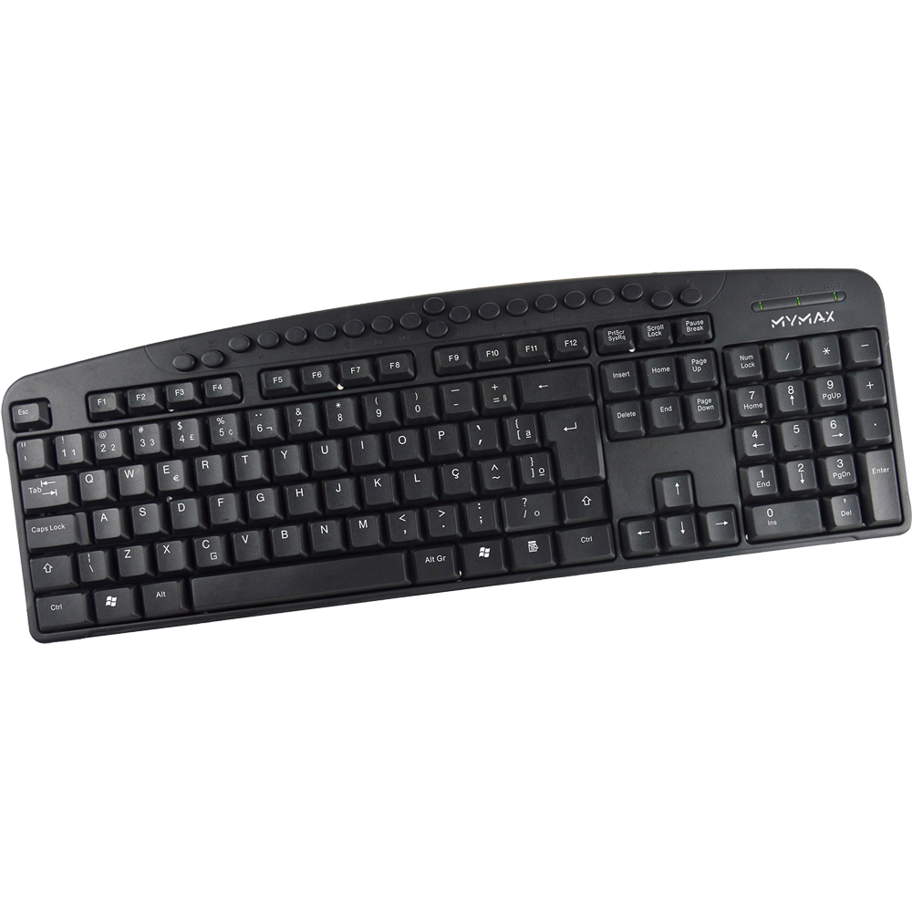

Este tipo de teclado facilita ações através de teclas adicionais de atalho, que permitem que o usuário manipule programas sem precisar sair da aplicação onde se encontra. Por exemplo, o usuário pode passar de uma faixa para outra (de vídeo ou música) sem precisar abrir o programa que a está reproduzindo.
 Voltar